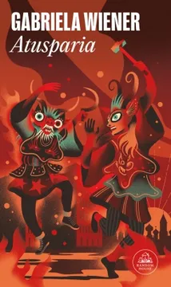

Atusparia
Gabriela Wiener
De qué trata
Una política de izquierda víctima del lawfare se encuentra prisionera en una cárcel de alta seguridad en las entrañas de la selva amazónica. Se hace llamar Atusparia, como el líder de la resistencia indígena peruana del siglo XIX. El amor en tiempos del capitalismo la engulle en una espiral que la alejarán de los viejos ideales de su educación hasta que el llamado de sus raíces la llevan a mimetizarse con el héroe revolucionario de su infancia.
Por qué dialoga con Latinoamérica hoy
El libro narra la historia política de una mujer, líder de izquierda, desde su formación durante los años 80 hasta un desenlace polémico. Wiener se inspiró en su propia experiencia escolar en un colegio fundado por personas que estudiaron en la Unión Soviética, donde se fusionaba la educación científica y socialista con el indigenismo y la realidad social peruana. La autora critica a las historias de izquierda que suelen ser machistas y a menudo borran el papel fundamental de las mujeres en la logística, el sostenimiento y la resistencia política. No solo denuncia que la criminalización de la protesta social y de los líderes indígenas no es racismo simple, sino estructural; también sostiene que el Estado ha utilizado históricamente el lawfare para desactivar resistencias y perseguir a quienes defienden sus territorios frente al extractivismo multinacional.